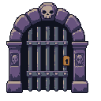
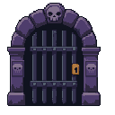

Stage 02 · Gate & arch
Review candidate — no merge or production replacement
Broader violet-stone arch, a skull keystone, optional relief plates, recessed iron gate and bronze lock. The approved Stage 01 wall, floor, supports and portrait recess are unchanged.
Actual Unity Game View
Art-only scene with static approved Rattlebones, Farmer and Pan Villager scale references. These captures are not production combat or device tests.
Compare with approved Stage 01
PixelLab source → LibreSprite cleanup
One 128 x 128 PixelLab source, charged 6 generations. Muted violet stone replaces beige highlights; iron is quieter; side reliefs use connected skull shapes. A small internal opening gap was filled. The complete outer bounds remain 104 x 115 pixels. Material separation uses 11 colors (raw source: 9), with binary alpha.

Raw · native 1x
Clean · native 1xTen separate native modules
Each source has two transparent pixels of clearance. The recess continues behind the bars; plain stone continues behind each optional relief. Reassembly matches the cleaned source pixel-for-pixel. The full gate image is a source/review document, never a flattened scene texture.
Verification
| Check | Result |
|---|
| Unity explicit art-preview test | 1 passed, 0 failed |
| Six actual captures at 1x / 2x / 3x | Zero source-pixel differences |
| 495 protected files | Unchanged |
| Point / FullRect / 64 PPU / uncompressed / no mipmaps | Verified |
| Palette / alpha / edge clearance | 11 colors / binary / 2px per module |
| Tools/Validate-Unity.ps1 | Passed |
The top plaque area, portrait clipping and floor remain unchanged. UI hero pieces and decorative props belong to later stages. No gameplay files, builds or save data were modified.
Report · Asset ledger · Pixel checksStopped here for Stage 02 approval. Stage 03 has not started.